HISTORIA
El territorio actual de México fue descubierto y habitado por grupos de cazadores y recolectores nómadas hace más de 30 000 años. Alrededor del año 9000 a. C. se desarrollaban los procesos que llevaron a la domesticación de plantas como la calabaza y el huaje en regiones como el Valle de Tehuacán y la sierra de Tamaulipas. La domesticación del maíz ocurrió alrededor del quinto milenio antes de la era común y fue un hito que después condujo al establecimiento de aldeas sedentarias en Mesoamérica.
OASISAMÉRICA
Los oasisamericanos fueron cultivadores, aunque las condiciones climatológicas no les permitían una agricultura muy eficiente y por ello tenían que recurrir a la caza de sapos y tortugas, y la recolección para complementar su subsistencia. Construyeron grandes aldeas en Nuevo México y la zona arqueológica de Casas Grandes, en Chihuahua.
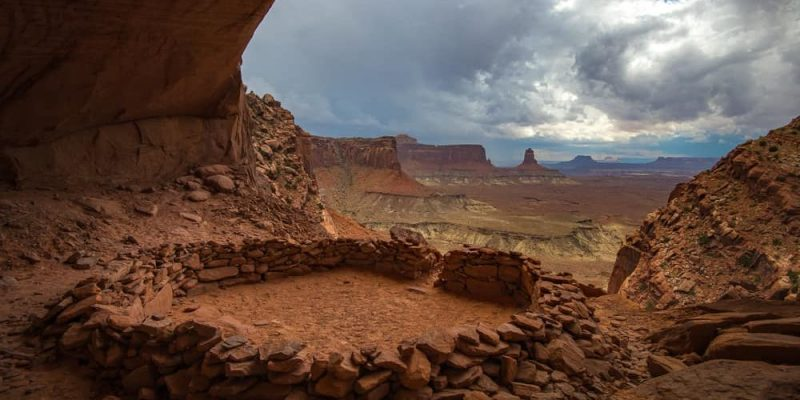
ARIDOAMÉRICA
Los habitantes de la región conocida como Aridoamérica continuaron con su cultura nómada, aunque mantuvieron contacto con los mesoamericanos. Algunos sitios presentan ocupación continua desde tiempos muy antiguos, como cueva de la Perra (12 000 a. C.), cueva de la Candelaria (8000 a. C.), El Conchalito (1000 a. C.) y las cuevas de la Sierra de San Francisco (10 500 a. C.).
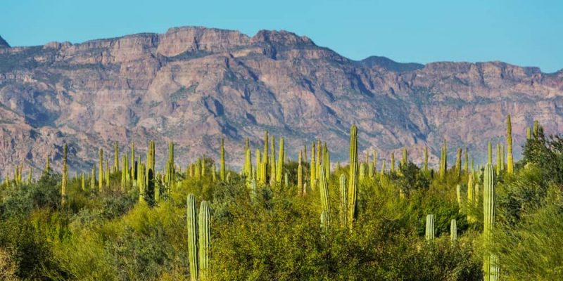
MESOAMÉRICA
OLMECAS
El inicio de la civilización mesoamericana se ubica entre el año 2500 a. C., con la aparición de la alfarería y las primeras aldeas agrícolas, y el 1500 a. C. Durante el Preclásico Medio (siglos XV-IV a. C.) se difundió la cultura olmeca en toda Mesoamérica. Algunos de sus centros más importantes fueron La Venta y Tres Zapotes. Se dedicaron a la agricultura, principalmente al cultivo del maíz y algodón.
El centro olmeca más antiguo registrado es San Lorenzo, fue construido en el año 1150 a. C. en el actual municipio de Texistepec, situado en la cuenca del río Coatzacoalcos, en el estado de Veracruz. El inicio del florecimiento de la cultura olmeca en este sitio, época de la que datan la mayor parte de las esculturas y elementos arquitectónicos que caracterizan a la cultura olmeca, muchos de los cuales se conservan en el sitio. San Lorenzo fue saqueado en el año 900 a. C., y las esculturas monumentales sufrieron un intento de destrucción; algunas se enterraron, y otras fueron trasladadas al centro ceremonial La Venta.
La Venta fue el centro ceremonial más importante de esta cultura, esta ciudad es el primer trazo arquitectónico planificado en el México antiguo. Destaca su gran arquitectura monumental, y sus ofrendas hechas de jade. Cuenta con la pirámide más antigua de Mesoamérica y también se han encontrado cabezas colosales y tronos, que merecen especial reconocimiento por el hecho de que para construirlas.
El centro ceremonial de Tres Zapotes fue el último en desarrollarse. Es el más conocido porque fue el que sobrevivió hasta una época más cercana, pero la civilización olmeca que se desarrolló aquí fue una cultura ya en decadencia, no el esplendor que vivió en los centros ceremoniales anteriores.
Se piensa que los olmecas fueron invadidos por algún pueblo rival, lo que ocasionó el abandono y la destrucción de algunas ciudades; con lo cual se piensa que la cultura olmeca se diseminó atreves de migraciones. Se dispersaron en diferentes lugares: unos se dirigieron a la región maya, otros marcharon al centro y otros hacia el norte. Los que se integraron en el centro fueron a la ciudad Cuicuilco, pero desapareció por la erupción del volcán Xitle; por eso fueron obligados a viajar a otros lugares así llegaron a partes de los estados de Morelos, México, Oaxaca y Chiapas.
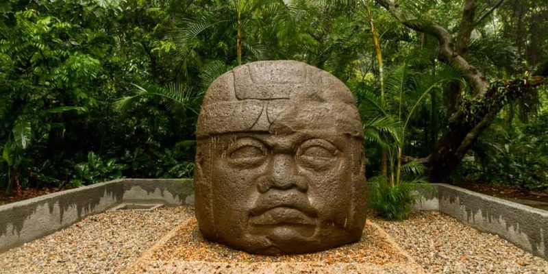
TEOTIHUACANOS
El periodo clásico abarca del año 200 al 900 d. C., en este periodo las civilizaciones mesoamericanas alcanzaron su máximo desarrollo cultural. Se construyeron los mayores basamentos piramidales de toda Mesoamérica, como la Pirámide del Sol en Teotihuacán en el actual Estado de México o el Templo de la Serpiente Bicéfala en Tikal.
Las ciudades en este periodo crecieron mucho hasta alcanzar su máxima población, como Teotihuacán (Estado de México), Monte Albán en Oaxaca y Tikal, estas ciudades mantuvieron estrechas alianzas matrimoniales, comerciales y políticas entre los reyes-sacerdotes y se sabe, porque en la entrada de cada uno había monumentos de piedra que significaban que venían los embajadores teotihuacanos; asimismo en Teotihuacán se han encontrado productos mayas y zapotecos como la cerámica, cuentas de jade, conchas y caracoles marinos.
Teotihuacán se convirtió en la ciudad principal de este periodo, estaba situada en la zona del altiplano central, lo que permitió a sus habitantes aprovechar los recursos naturales como la obsidiana para fabricar armas, herramientas y utensilios. Además tenían dioses de la lluvia y de la fertilidad como Quetzalcóatl (Que significa «serpiente emplumada») y Tláloc (que significa: «néctar de la tierra», aunque a este Dios también lo veneraban en la cultura maya y zapoteca).
Los artesanos obtenían de la zona distintos materiales como: jade, obsidiana gris, obsidiana verde, cristal volcánico negro, concha y hueso. Con ello elaboraron vasijas, ollas, platos, vasos, ornamentos, cuchillos, máscaras, collares y distintas figuras.
Los teotihuacanos expresaban lo que veían por medio de la escultura, cerámica y la pintura. En fachadas representaban la deidad de Tláloc y la serpiente emplumada, relacionados con la lluvia y la fertilidad respectivamente, así como otros personajes importantes para ellos.
Los teotihuacanos eran politeístas, tenían los siguientes dioses:
Tláloc: Fue el dios de la lluvia y hay teorías que también era el dios de la fertilidad y la tierra. Fue representado como humano-animal, con un tocado de plumas y dos grandes colmillos además de dos ojos grandes y saltones.
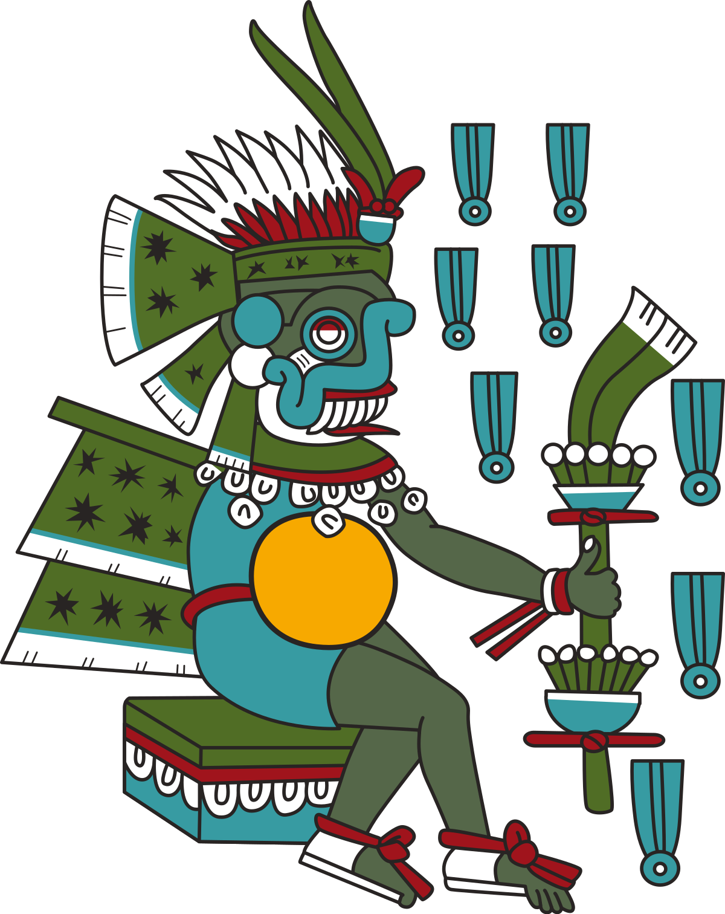
Quetzalcóatl: Fue el dios de los vientos. Su nombre significa: La Serpiente Emplumada, era representado como una serpiente gigante.
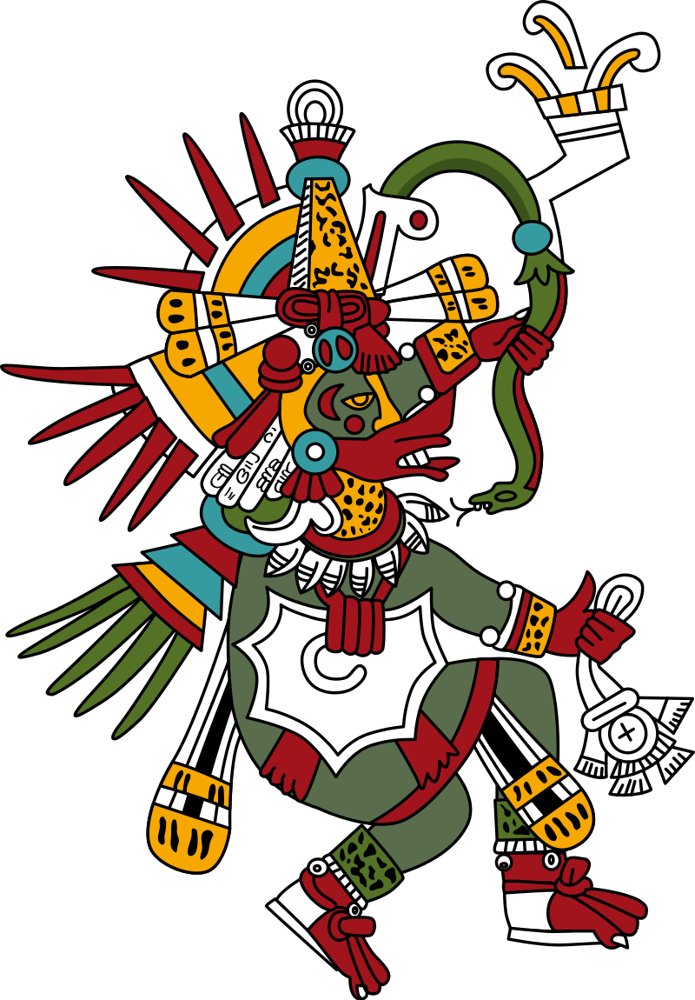
Chalchiuhticue: Fue la diosa de los lagos y de los ríos. Fue representada con un tocado de plumas un collar y piel naranja.
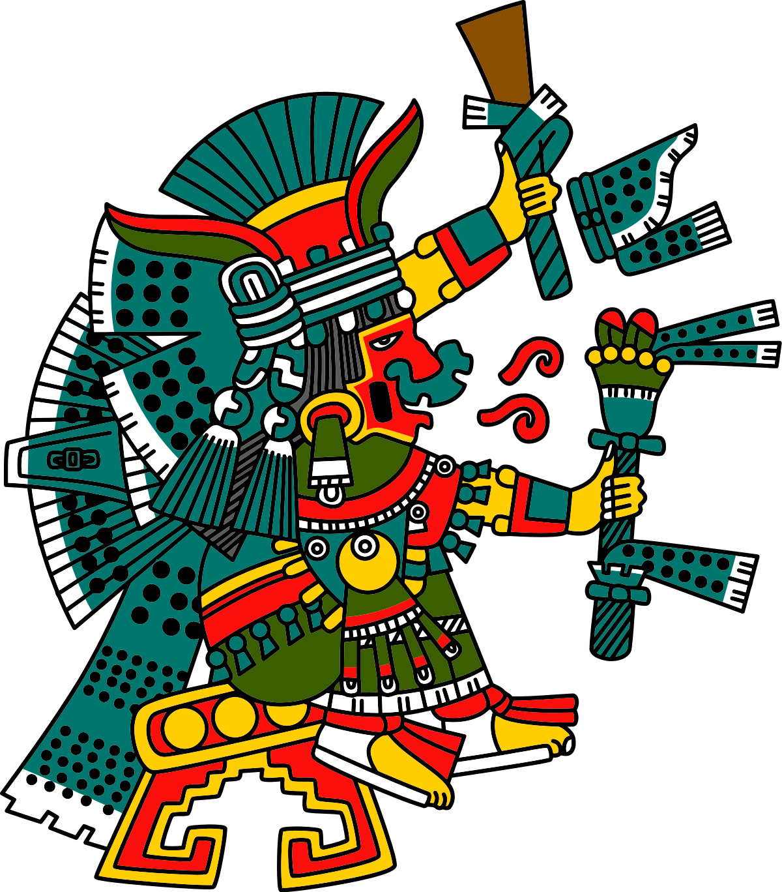
Huehuetotl: Fue el dios del fuego, esposo de Chalchiuhticue. Fue representado como un señor viejo. Fue la reencarnación de los volcanes y la sabiduría.
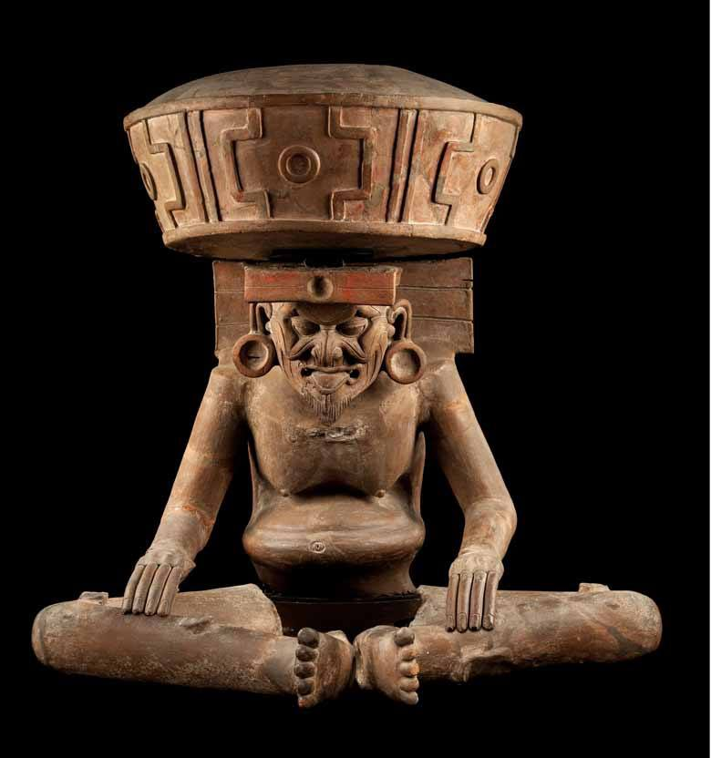
Se desconoce la decadencia de la cultura teotihuacana, algunos investigadores dicen que pudo ser por la sobre explotación de recursos naturales, invasiones de otros pueblos y algunos conflictos internos.
En su sociedad estaba dividida en: reyes-sacerdotes, guerreros, comerciantes, agricultores, pescadores, artesanos, esclavos de guerra y tributos de sacrificios.
Los artesanos obtenían de la zona distintos materiales como: jade, obsidiana gris, obsidiana verde, cristal volcánico negro, concha y hueso. Con ello elaboraron vasijas, ollas, platos, vasos, ornamentos, cuchillos, máscaras, collares y distintas figuras.
La ciudad de Teotihuacán mantuvo una estrecha relación con otras culturas, como la maya y zapoteca. Con los mayas tuvieron alianzas matrimoniales, a través de acuerdos comerciales con Teotihuacán-Palenque y Uxmal. Con los zapotecos mantuvieron una relación entre Teotihuacán y Monte Albán.
Teotihuacán se considera la ciudad principal de Mesoamérica clásica, además de la Pirámide del Sol y la Pirámide de la Luna, también destaca el templo de Quetzalcóatl.
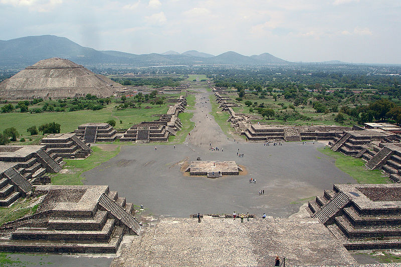
MAYAS
La cultura maya es otra importante civilización que perduró por milenios. La civilización maya desarrolló exquisito arte y arquitectura, el sistema de escritura más avanzado del Nuevo Mundo junto con mucha literatura, así como conocimientos astronómicos y matemáticos. Entre estos últimos destaca el uso de un calendario más preciso que el usado en Europa en su momento, y ser una de las civilizaciones pioneras en el uso del número cero.
Habitó en una parte de la región sur de Mesoamérica, en los territorios actuales de Guatemala, Belice, Honduras, El Salvador y en el territorio comprendido por cinco estados del sureste de México: Campeche, Chiapas, Quintana Roo, Tabasco y Yucatán. El territorio, por ser tan grande, se dividió en tres:
El área norte: abarca la península de Yucatán (comprendida por los estados de: Yucatán, Campeche y Quintana Roo), también es conocida como Puuc.
El área central: es la más extensa, comprende la cuenca del El Petén, en Guatemala, se extiende hacia el occidente de Honduras y el oriente de Chiapas, Tabasco y el sur de la península de Yucatán.
El área sur: ubicada en la costa del Pacífico, los Altos de Guatemala, parte de Chiapas y de El Salvador. Posee una zona montañosa que recorre el sur, suroeste y sureste, y abarca la Cordillera Centroamericana. En la meseta alta hay varios lagos que tuvieron su origen en la actividad volcánica de la región.
Los mayas usaron piedra caliza para elaborar basamentos piramidales, templos, plataformas y juegos de pelota; aunque también ocuparon ese material para hacer diversos monumentos y esculturas, entre estas destacan las estelas que eran columnas talladas de piedra con personajes importantes junto con su nombre, fecha de nacimiento o fecha de muerte.
En su pintura mural representaban escenas cotidianas, como la pesca, las fiestas y las ceremonias rituales relacionadas con la guerra.
Por razones estéticas los mayas acostumbraban deformar el cráneo de los niños y provocares estrabismo.
La religión maya era politeísta, los gobernantes eran los que dirigían los asuntos religiosos (teocracia); sus dioses se relacionaban con los elementos naturales, los astros y las acciones humanas. Entre los dioses que sobresalieron esta: Hanub Kú (el dios creador de los mayas quiches), Itzamná (el dios creador de los mayas yucatecos), Ix Chebel Ya (dios del bordado y la pintura), Kakalcán (Quetzalcóatl) (dios del viento), Kin (dios del sol), Ixchel (diosa de la luna), Chac (dios del agua), Yum Kaax (dios del maíz y la agricultura), Ah Puch (dios de la muerte).
Las ciudades mayas se construyeron a partir de las posiciones astronómicas relacionadas con el movimiento del Sol, la Luna y Venus. El Centro de algunas ciudades estaba reservado para que viviera la familia de los gobernantes; alrededor habitaba la nobleza, cuyos edificios estaban relacionados con el comercio; finalmente más allá estaban la tierra de cultivo y el resto de la población.
Los mayas ocuparon piedra caliza para elaborar pirámides, templos, plataformas y juegos de pelota. También lo ocupaban para elaborar diviesos monumentos y esculturas, entre estas destacan las estelas donde le ponían esta vez glifos.
Otros materiales de la región servían para su vida diaria. Usaron madera, estuco, barro y piedras para elaborar máscaras, collares, anillos y pequeñas esculturas. Además ellos confeccionaban telas de algodón para vestirse y tejían cestos con fibra para cargar semillas.
Los mayas llegaron a desarrollar la navegación, construyeron muelles canales y puertos como Xelhá, Xcaret, Tulum, fueron importantes centros donde intercambiaban productos como sal, y pescado.
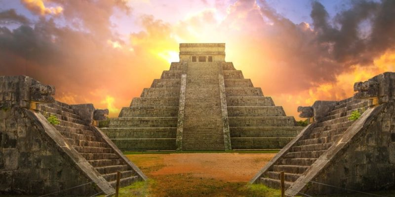
ZAPOTECOS
La cultura zapoteca habitó lo que hoy es el estado de Oaxaca, el sur de Guerrero y el sur de Puebla. Se distinguió por sus excelentes tejedores y alfareros, tuvo notables avances en su escritura, arquitectura y conocimientos calendáricos.
Su ciudad cumbre era Monte Albán, que tuvo su esplendor desde el año 200 y hasta el debilitamiento de esta alrededor del 900. La ciudad ceremonial de Monte Albán se construyó en lo alto de una montaña, con edificios orientados como los astros utilizando la técnica de talud y tablero; se edificaron basamentos piramidales, juegos de pelota y un observatorio en punta de flecha, ubicado a donde hoy se conoce la constelación de Orión. Al igual que Teotihuacán, se desconoce por qué se debilitó Monte Albán.
La sociedad se dividía en gobernantes-sacerdotes, comerciantes, guerreros, artesanos, esclavos de guerra y tributos de sacrificios. Conforme los deberes de cada quien se controlaba la economía y de ello el control de la agricultura y el progreso de las ciudades.
Tenían dos calendarios:
Iza, tenía 365 días agrupados en 18 meses y utilizado para las cosechas, estaba organizado en 18 meses de 20 días cada uno, contaba al final con un periodo de cinco días.
Piye: tenía 260 días repartidos en 13 meses y se utilizaba para ponerle nombre a los recién nacidos, estaba dividido en meses de 20 días.
Eran politeístas, su dios principal se llamaba Xipe Totec, otros dioses eran:
Pitao Cocijo: dios del trueno y de la lluvia
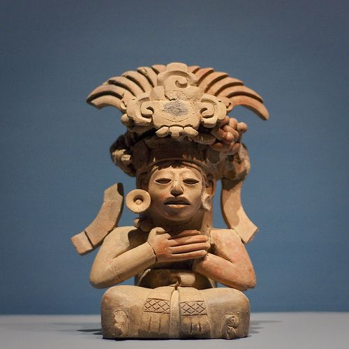
Pitao Cozobi: dios del maíz
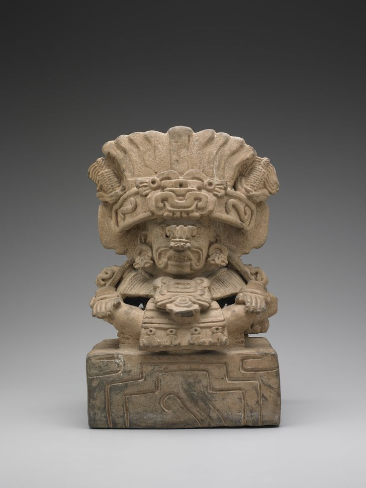
Pitao Cozana: dios de los antepasados
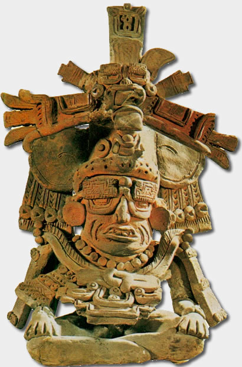
Quetzalcóatl: dios de los vientos
Xonaxi Quecuya: dios de los terremotos
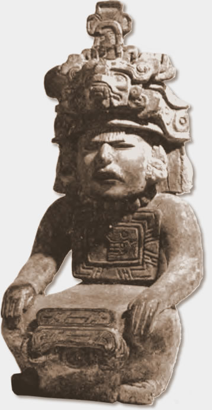
Coqui Bezelao: dios de los muertos
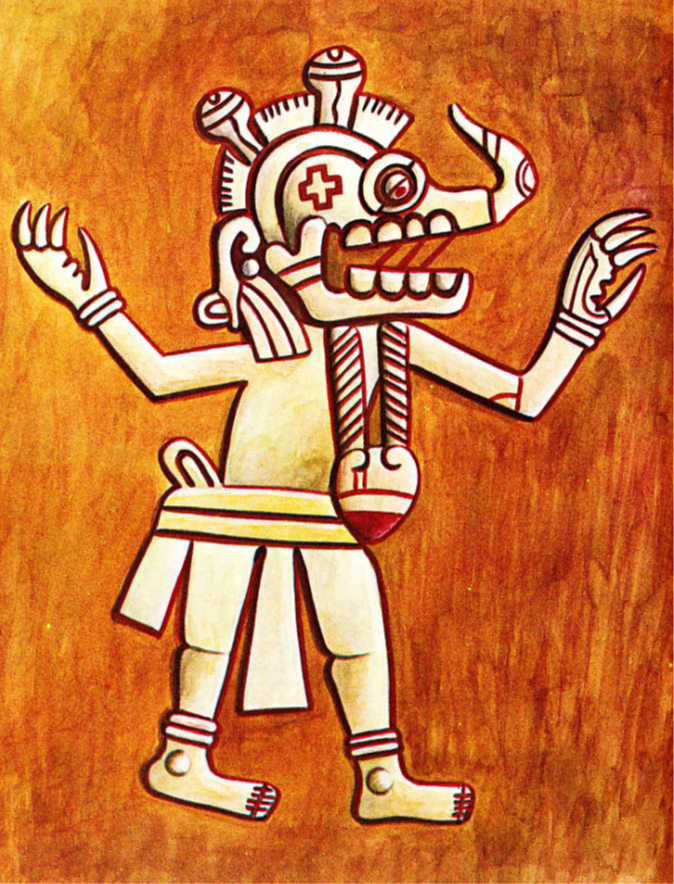
La sociedad se dividía en: gobernantes-sacerdotes, comerciantes, guerreros, albañiles, pintores, talladores de piedra, alfareros, orfebres, campesinos y prisioneros de guerra.

TOLTECAS
El periodo posclásico abarca del año 900 al 1521 d. C., este periodo se caracteriza por un gran incremento de conflictos armados. Se puede apreciar en la cerámica la gran importancia de la guerra, los códices y las escrituras, además de que un notable detalle es el estilo arquitectónico de los edificios.
La cultura tolteca se desarrolló entre los años 900 y 1150 d. C. Los toltecas dominaron la región huasteca, en parte de lo que hoy es San Luis Potosí y Zacatecas, así como el centro de México como Hidalgo, donde se ubicaba el centro ceremonial y capital llamado: Tollan-Xicocotitlan más conocido como Tula. La economía se basaba en una agricultura de extensos campos de cultivo irrigados por complejos sistemas de canales, donde el maíz, el frijol y el amaranto eran el principal cultivo. La sociedad se dividía en varios grupos, los más privilegiados eran los: militares, funcionarios, el supremo gobernante y los sacerdotes, quienes estuvieron al servicio de la casta militar y se encargaban de atender el culto, los calendarios y la cuenta del tiempo. Se han encontrado rastros de un incendio en Tula, por lo que se piensa que el final de esta ciudad fue muy violenta.
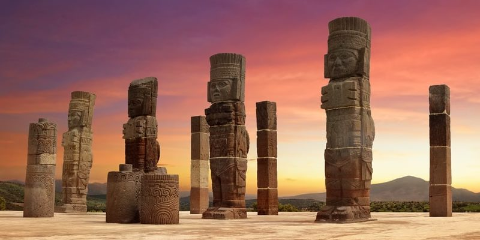
MIXTECOS
Otra cultura del posclásico es la mixteca, que se desarrolló del 1300 al 1522 d. C., concluyendo con la conquista de los españoles. Abarcaron una región llamada la Mixteca que comprendía los estados de Oaxaca, Guerrero y partes del estado de Puebla y Chiapas. De acuerdo con su mitología, los mixtecos eran descendientes de los hijos del árbol de Apoala. La divinidad principal de los mixtecos era Dzahui, dios de la lluvia y patrono de la nación mixteca, otra divinidad de gran importancia era Nueve Viento-Coo Dzahui, héroe civilizador que les entregó el conocimiento de la agricultura y la civilización. Durante la época prehispánica, la sociedad mixteca se caracterizó por su alta jerarquización. La subsistencia de los mixtecos estaba basada en la agricultura, las condiciones ecológicas y topográficas del territorio de este pueblo condicionaron el desarrollo de ciertos cultivos adaptados a la diversidad de ambientes en la Mixteca.
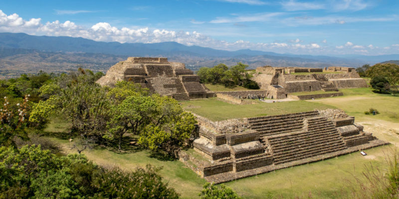
MEXICAS
Hacia mediados del siglo XIV, los Mexicas llegaron al valle de México, según el mito llegaron de un lugar al norte llamado Aztlán y de ahí retomaron elementos de otras culturas. Se les llamó el pueblo del sol, ya que era al que veneraban, gracias a su poder militar de los mexicas (o aztecas) y fundaron su gran capital con un gran poder militar: México-Tenochtitlán. Cuando forjaron un gran imperio y formaron la Triple Alianza con Texcoco y Tlacopan. La guerra fue una práctica muy común para poder conseguir extender su imperio, los pueblos conquistados entregaban productos como oro, plata, jade y plumas de Quetzal. Desarrollaron conocimientos que reflejaba las creencias religiosas.
La guerra y la religión, al menos para los aztecas, eran inseparables. Pertenecían la una a la otra. ...Con el fin de obtener apropiados prisioneros-víctimas que sacrificar a los dioses, había incesantes guerras pequeñas e incluso su armamento estaba dispuesto para incapacitar no para matar, todo para obtener el alimento para los dioses la sangre y el corazón. Palabras del libro: Historia de México.
La cultura mexica llegó a su fin en el año 1521 con la conquista de los españoles.
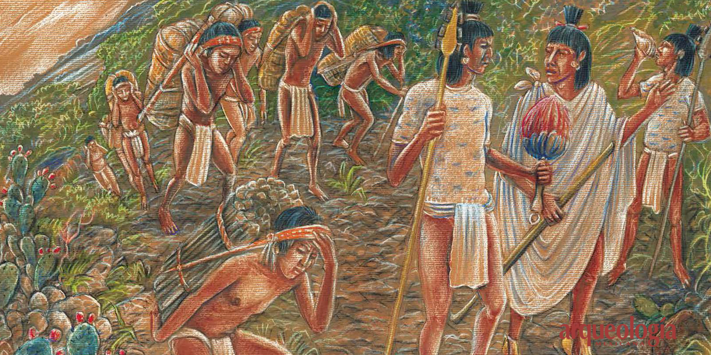
CONQUISTA
Después de las expediciones de Francisco Hernández de Córdoba (1517) y Juan de Grijalva (1518), Hernán Cortés y su gente arribaron a Cozumel y alcanzaron las costas de Tabasco, donde fueron combatidos por los chontales, en Centla. En esa región, Cortés fundó la Villa de Santa María de la Victoria y recibió como obsequio a la bilingüe náhuatl-maya, Malintzin, una esclava que fungió junto con Gerónimo de Aguilar como valiosa intérprete de los extranjeros.
Los españoles se dirigieron a la costa de Veracruz, por donde penetraron al interior de Mesoamérica. Establecieron alianzas con algunos pueblos indígenas y avanzaron a México-Tenochtitlan. En el camino derrotaron a los aliados de los mexicas, como ocurrió en Cholula. Moctezuma Xocoyotzin recibió pacíficamente a los españoles, pero la Matanza de Tóxcatl puso a los mexicas en pie de guerra. Cuitláhuac derrotó a los invasores en 1520, pero murió durante la epidemia de huey cocoliztli.
Los tlaxcaltecas, texcocanos y totonecas, conformaron un conglomerado que se había aliado a los españoles, factor decisivo en las batallas contra los mexicas. Cuauhtémoc, último tlatoani tenochca, fue apresado el 13 de agosto de 1521, y ejecutado en 1525. Tras ocupar México-Tenochtitlan, los españoles se lanzaron a conquistar el resto de Nueva España en un proceso que duró todo el período virreinal. La conquista militar fue acompañada por la Cristianización y aculturación de los pueblos indígenas, lo que derivó en un proceso de Sincretismo cultural.
Una vez que Tenochtitlan fue sometida, los soldados españoles pudieron someter el centro del territorio. Hernán Cortés asumió el gobierno como capitán general de Nueva España.
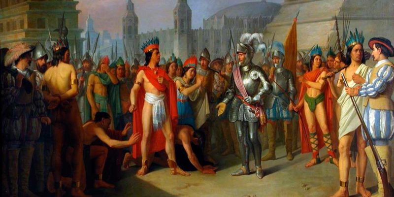
VIRREINATO DE LA NUEVA ESPAÑA
En 1527 se estableció la Audiencia de México. El primer virrey fue Antonio de Mendoza y Pacheco y gobernó a partir de 1535. Nueva España fue gobernada por 63 virreyes durante los casi 300 años de dominación española. La dominación española enfrentó la resistencia indígena, que se manifestó en algunas ocasiones por la vía de las armas, como en la Guerra Chichimeca (1546), la Guerra del Mixtón (1540-1551), Rebelión de los Pericúes (1734-1737) y la rebelión de los mayas de Cisteil (1761).
La base de la economía novohispana fue la minería. El descubrimiento de yacimientos, notoriamente, Zacatecas y Guanajuato, permitió gradualmente que Nueva España ocupara una posición privilegiada. La minería permitió el desarrollo de otras actividades asociadas, especialmente los obrajes y la agricultura, que convirtieron a las regiones del Bajío y los valles de México y Puebla en prósperas regiones agrícolas y de actividad industrial incipiente. Los minerales se acuñaban exclusivamente en la Real Casa de Moneda de México; el Real de a 8 llegó a ser, por su cuantía, alta ley y calidad, la moneda preferentemente utilizada en las transacciones internacionales del Imperio.
El centro de gobierno del Virreinato de Nueva España era México, que a su vez gobernaba Cuba, la América del Norte española y Filipinas. Filipinas, en particular, fue colonizada a través de México, ya que México estaba geográficamente más cerca que la España más distante. Filipinas produjo partidarios pro-mexicanos en la persona de Ramón Fabié uno de los partidarios filipinos de la independencia mexicana de Miguel Hidalgo. España, por lo tanto, cortó deliberadamente los lazos entre Filipinas y América Latina al gobernarlos directamente desde Europa después del año 1821.
El comercio del virreinato era realizado a través de dos puertos: Veracruz (golfo de México) y Acapulco (océano Pacífico). A este último llegaba la Nao de China que transportaba productos de las Filipinas a Nueva España y de ahí se transportaban por tierra, llegando a Puebla, donde la influencia oriental es notoria en su artesanía y en sus tradiciones como la de la «china poblana», a la ciudad de México y a Veracruz de donde se enviaba a España o a los puertos del Atlántico. El comercio coadyuvó al florecimiento de estos puertos, de Ciudad de México y las regiones intermedias. Hay que señalar que hasta finales del siglo XVIII, con la introducción de las reformas borbónicas, el comercio entre los virreinatos españoles no estaba permitido.El virreinato fue la base del mosaico cultural y racial del actual México. En su seno se fusionaron a lo largo de los 300 años las culturas indígenas y europeas. Asimismo, se dio una gran cantidad de mezclas raciales. Figuras como sor Juana Inés de la Cruz y Juan Ruiz de Alarcón destacan como sus más notables contribuyentes a la literatura novohispana, así como Manuel Tolsá en la arquitectura. Relativo a instituciones financieras destacó Pedro Romero de Terreros, fundador del Sacro y Real Monte de Piedad de Ánimas, antecedente del Nacional Monte de Piedad (también llamado Monte Pío), génesis del microcrédito a nivel mundial. También destacan los descubrimientos químicos de Andrés Manuel del Río, descubridor del eritronio, posteriormente renombrado vanadio, en la tabla periódica de los elementos químicos.
La sociedad novohispana profesaba en su mayor parte la religión católica, la Santa Inquisición —que procuraba la supresión de herejía y apostasías— tenía instalados sus oficios en el territorio. Los indios estaban exentos de la jurisdicción inquisitorial, y sus asuntos de fe eran atendidos primero por los misioneros y luego por un tribunal dependiente los obispos, que los juzgaba con más tolerancia por ser considerados «neófitos» en la fe.
El territorio de la Nueva España era lo suficientemente grande para que en él existiera una gran cantidad de pueblos indígenas y una gran variedad de lenguas, sin excluir a los europeos. Durante los trescientos años de la Nueva España se tuvieron distintas disposiciones legales que afectaron el comercio y la prosperidad de los novohispanos. En general su nivel de prosperidad era el más alto de América, en especial los residentes de la ciudad de México, Puebla de los Ángeles, la Villa Rica de la Veracruz, Acapulco y Zacatecas.
A pesar de que por regla general se propuso una política de integración, la realidad política que imponía el otorgamiento de los puestos importantes para la burocracia española (en especial desde la llegada de los Borbones, que propugnaron el modelo francés de colonización, contra los cuales los criollos o hijos de españoles nacidos en México empezaron a resentirse). Además se crearon divisiones tan graves como las castas en Yucatán. Durante el período virreinal se gestaron muchas de las tradiciones e instituciones que han evolucionado, de conformidad con el carácter del pueblo mexicano, en muchas de las características mexicanas de la actualidad.
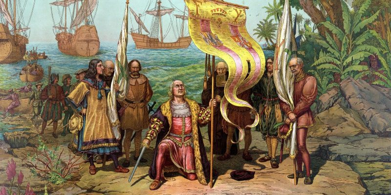
INDEPENDENCIA
La ocupación francesa de España detonó varios movimientos soberanistas en las posesiones americanas. En 1808 tuvo lugar una crisis política en Nueva España que concluyó con la destitución del virrey Iturrigaray mediante un golpe de Estado. En otros puntos del virreinato se fraguaron conspiraciones contra el dominio español, pero fueron suprimidos. El 16 de septiembre de 1810, Miguel Hidalgo y Costilla llamó a la insurgencia al pueblo de Dolores (Guanajuato), dando inicio a la guerra de independencia. A Hidalgo se debe la abolición de la esclavitud en México. En 1811, él y los líderes del movimiento fueron apresados y fusilados.
El movimiento insurgente se fortaleció en el centro de Nueva España bajo el mando de José María Morelos y Pavón, que destacó por su capacidad como estratega militar. En 1813 convocó al Congreso de Anáhuac, que proclamó la independencia de la América Septentrional y dotó al país de su primera constitución, promulgada en Apatzingán. Morelos fue capturado y fusilado en 1815.
A partir de 1815 los independentistas entraron en una guerra defensiva y fragmentada. La campaña de Pedro Moreno y Francisco Xavier Mina en 1817 avanzó rápidamente desde Tamaulipas hacia el centro de Nueva España, pero fue finalmente derrotada. El indulto ofrecido por el virrey Apodaca alentó la deserción de muchos insurgentes. La rehabilitación de la Constitución de Cádiz en 1820 afectó a la élite novohispana, que pactó con los insurgentes la independencia del virreinato. Agustín de Iturbide se apoyó en Vicente Guerrero y juntos promulgaron el Plan de Iguala en 1821. Cuando Juan O'Donojú —último virrey designado— llegó a Nueva España, firmó el acta de independencia de México el 28 de septiembre de 1821.